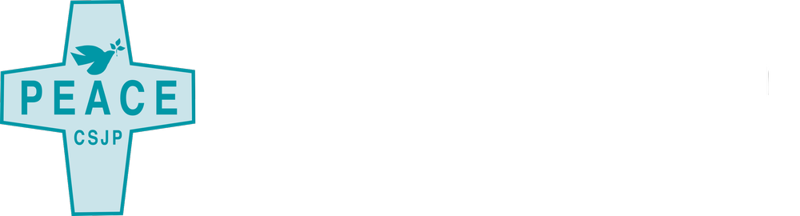

Before the charts, before the programs, before any of what this site documents... there were people who believed that peace in Haiti was worth investing in when almost no one else did. This page is for them.
SAKALA is Sant Kominote Altènatif Ak Lapè... the Alternative Community Center of Peace. Our partners are the Sisters of St. Joseph of Peace. We did not plan that. Some alignments are simply true.
The Congregation of the Sisters of St. Joseph of Peace has been present in Haiti since 2009, when their Haiti mission began at Hôpital Sacré Coeur in Milot... the same town where SAKALA's northern site stands today. They did not discover this work from a distance. They have stood in the Nord for seventeen years... and the Nord is exactly where their support works: the JOB FOR PEACE program employs youth through church-linked enterprises across the Nord Department, in Grand Bassin and Acul du Nord, in the same hills as their own mission.
Through the JOB FOR PEACE partnership, the Sisters' community has stood behind a simple conviction: that the most direct answer to violence is a young person with work, skills, and a place to belong. Not a slogan... a payroll. It is a conviction SAKALA was built on: the organization began as a Pax Christi peacebuilding initiative, so the Catholic peace lineage does not end at the sisters... it starts at our founding. In a place where most institutions arrive with cameras and leave with reports, the Sisters stayed with the work itself.
JOB FOR PEACE is now entering its third cycle. The second cycle kept 500 youth employed through one of the hardest years in Haiti's recent history... gang violence, political instability, the nationwide suspension of USAID programming... through church-linked garden enterprises, rabbit and chicken production units at Grand Bassin and Acul du Nord, and the TapTap collective farm network. While other funding disappeared, the Sisters' support held. The youth kept growing food and earning income.
The current chapter is different in one important way: it is designed to be the last one that needs outside funding. The renewal carries four engines, each built to stand on its own legs...
In other words: the Sisters' support is not buying another year of a program. It is buying the bridge to the year no one has to buy.
The Sisters of St. Joseph of Peace have carried a conviction since their founding: that peace is not the absence of conflict but the presence of justice... housing, work, dignity. SAKALA's whole method is that conviction translated into Kreyol and planted in the ground: Konekte Kreye Travay, the cooperative work-team that creates work. What they believe, we build. That is the partnership.
To the Sisters, and to everyone in their community who chose, year after year, a neighborhood the world had written off: the gardens are growing, the youth are working, and the peace in our name is a little more real because of you. Mèsi. N ap kenbe... ansanm.
csjp.org